== 博文参考链接： https://blog.csdn.net/lilai619/article/details/79695109 #f3081a==
数据集制作
图片收集
从网络收集图片，通过脚本统一修改文件名，然后使用labelImg进行标注即可，因为在Linux系统中文件命中若包含中文、特殊字符会导致生成TXT文件时或者训练时出现难以预料的错误。
重命名脚本如下：
dataset.py1
2
3
4
5
6# 指定文件夹目录
image_dir = 'E:/test/'
# 指定输出文件夹
save_dir = 'E:/output/'
# 指定新文件名前缀
new_name = 'test_'
rename.py1
2
3
4
5
6
7
8
9
10
11import os
import dataset
import shutil
image_dir = dataset.image_dir
save_dir = dataset.save_dir
new_name = dataset.new_name
os.chdir(dataset.image_dir)
files = os.listdir()
for i in range(0, len(files), 1):
os.rename(image_dir + files[i], save_dir + new_name + str(i) + '.' + str(files[i]).split('.')[-1])
制作VOC格式数据集
从网上下载LabelImg可执行文件，进行图片标注即可，LabelImg使用具体请参考网络。
注意：
**1. labelimg windows版本解压即可使用。
- 修改data文件下的 predefined_classes.txt，添加自己需要的类。
- 图像路径不能有中文。
图片标记好后，将图片和xml上传到服务器即可。 ==图片文件夹改名为JPEGImages
XML文件夹修改问Annotations==**
上传后文件夹结构最好如下图所示，其中test改为自己项目名称或者自定义即可
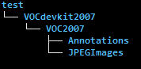
原因为采用此种文件层级形式，在使用其他框架如caffe-ssd Faster-RCNN 时生成数据集时都是通用，无需修改官方自带生成数据集脚本文件即可使用，较为方便快捷，如果自己的文件夹架构，则需修改相应脚本文件。
在VOC2007文件夹下添加如下文件
即目录结构为如下图所示
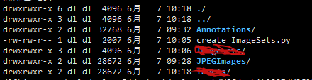
create_ImageSets.py1
2
3
4
5
6
7
8
9
10
11
12
13
14
15
16
17
18
19
20
21
22
23
24
25
26
27
28
29
30
31
32
33
34
35
36
37
38
39
40
41
42
43
44
45
46
47
48
49
50
51
52
53
54
55
56
57
58
59
60
61
62
63
64
65
66
67
68
69
70
71
72
73
74#!/usr/bin/env python
# encoding:utf-8
import os
import sys
import random
import glob
# 测试集test, 总数据的50%
# 训练和验证集train_val, 除去测试的剩余50%
# trainval中训练部分train, trainval的50%
# trainval中验证集val, trainval的50%
"""
try:
test_percent = int(sys.argv[1])
train_percent = int(sys.argv[2])
except:
print 'Please input picture range'
print './createTest.py test_number'
os._exit(0)
"""
IMAGE_SETS_PATH = 'ImageSets'
MAIN_PATH = 'ImageSets/Main'
XML_FILE_PATH = 'Annotations'
JPEGImages_PATH = 'JPEGImages'
test_percent = 0.66 #test样本占所有样本的百分比
train_percent = 1.0 #train样本占train+val样本的百分比
# 创建ImageSets数据集
if not os.path.exists(IMAGE_SETS_PATH):
os.mkdir(IMAGE_SETS_PATH)
os.mkdir(MAIN_PATH)
else:
if not os.path.exists(MAIN_PATH):
os.mkdir(MAIN_PATH)
img_list = os.listdir(JPEGImages_PATH)
numOfImg = len(img_list)
test_number = int(numOfImg*test_percent)
trainval_number = numOfImg - test_number
train_number = int(trainval_number*train_percent)
all_id = range(numOfImg)
test_id = sorted(random.sample(all_id, test_number))
trainval_id = list(set(all_id).difference(set(test_id)))
train_id = sorted(random.sample(trainval_id, train_number))
val_id = list( set(trainval_id).difference(set(train_id)))
trainFile = open(os.path.join(MAIN_PATH,'train.txt'),'w')
valFile = open(os.path.join(MAIN_PATH,'val.txt'),'w')
trainvalFile = open(os.path.join(MAIN_PATH,'trainval.txt'),'w')
testFile = open(os.path.join(MAIN_PATH,'test.txt'),'w')
#totalFileCount = sum([len(files) for root, dirs, files in os.walk(path)])
for i in range(numOfImg):
if i in test_id:
testFile.write(img_list[i].split('.')[0]+'\n')
else:
trainvalFile.write(img_list[i].split('.')[0]+'\n')
if i in train_id:
trainFile.write(img_list[i].split('.')[0]+'\n')
else:
valFile.write(img_list[i].split('.')[0]+'\n')
trainFile.close()
testFile.close()
trainvalFile.close()
valFile.close()
之后执行1
$ python create_ImageSets.py
即可，正常运行后即可在VOC2007文件夹下看到ImageSets文件夹。ImageSets文件结构如下
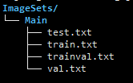
至此，VOC数据集准备完成
yolov3 训练
1 链接数据集文件
在yolo-v3文件夹下创建自己的项目目录，目录命名可以以项目命名
如 test
227yolov3地址为
1
2
3
4
5/home/dl/yolo/yolo-v3/darknet
```
项目文件夹
```shell
/home/dl/yolo/yolo-v3/darknet/test
创建数据集快捷方式，目的是为了数据集同一放置，而且可以供多用户多框架使用，不至于太混乱
1
2
3cd /home/dl/yolo/yolo-v3/darknet
cd test
ln -s /home/dl/data/test/VOCdevkit2007/VOC2007 VOC2007
2 生成数据集文件txt
1 | cp ../tools/voc_label.py . |
复制后的文件结构如下
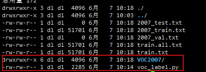
修改voc_label.py 如此次训练为两个类，”up” 和”down”,则修改为
1
classes=["up","down"]
使得classes的值为自己的标签
然后执行生成即可
1
python voc_label.py
执行完成后可以看到目录下面有如下文件，其中主要的为train.txt test.txt
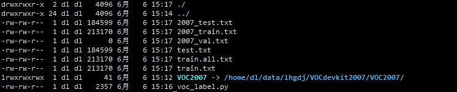
3 复制和创建配置文件
1 | cp ../cfg/yolov3-voc.cfg test_train.cfg |
修改配置文件
names文件修改
修改test_voc.names文件内容为训练的类别内容，如此次训练为两个类，”up” 和”down”,则修改为如下图所示即可
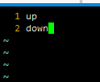
data文件修改
- classes 值修改为类别总数，不用包含背景，如此次训练为两个类，”up” 和”down”,则修改为2
- train 修改为刚刚生成的train.txt全路径
- test 修改为刚刚生成的test.txt全路径
backup 指定输出文件夹，可以全路径或者相对路径，但是一定要确保文件夹存在
配置好后如下图所示
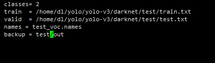cfg文件夹修改
- 修改batch和subdivisions 根据自己的显存情况，一般8g 640*480 改成32 16 即可，具体没有测试，训练的参数一般为batch=32 subdivisions=16 测试使用的为同一cfg文件，但是batch和subdivisions都要改为1 即batch=1 subdivisions=1
- width = 640 修改为自己图片的宽
- height = 480 修改为自己图片的高
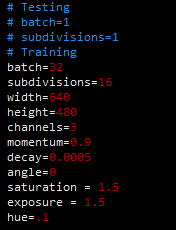
修改classe和fillter值，此cfg文件总共需要修改三次
classes值为类别总数，如此例子包含”up” “down”两类，即classes=2
fillter= (num/3)*(classes + 1 + 4 )
综上 num=9 时
classes = 2
fillter= 21注意 每层根据num来计算
第一处
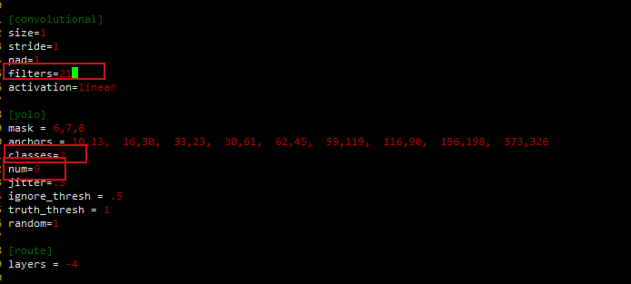
第二处
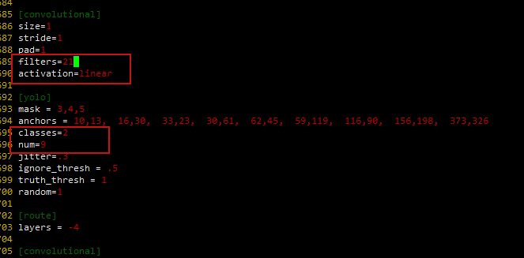
第三处
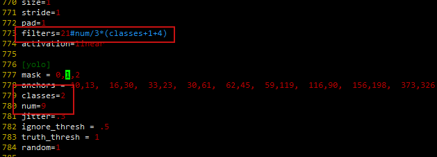
至此配置文件修改完成
训练
初次训练
回到yolov3的编译目录，即有darknet可执行文件的目录
本例为
/home/dl/yolo/yolo-v3/darknet
执行1
2cd /home/dl/yolo/yolo-v3/darknet
./darknet detector train test/test_voc.data test/test_train.cfg darknet53.conv.74
参数解释:
其中.data
- .data 文件为前面自己配置好的test_voc.data 可以决定路径或者相对路径输入，上面使用相对路径输入
- cfg也为前面修改好的cfg文件 可以决定路径或者相对路径输入，上面使用相对路径输入
- darknet53.conv.74 为官网预训练模型，可以使用预训练模型，也可以不使用。 可以决定路径或者相对路径输入，上面使用相对路径输入
训练后效果图
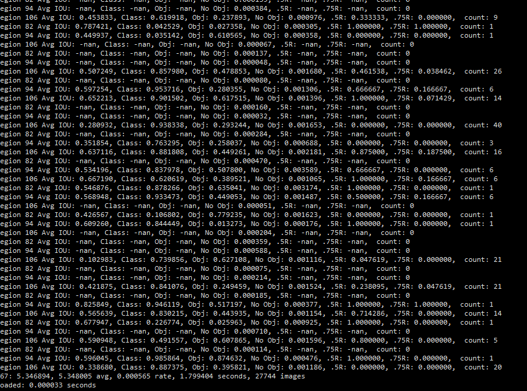
如果全为None则前面步骤存在问题，需要检查上述步骤是否出现问题，或者出现遗漏。
继续上次训练
1 | ./darknet detector train test/test_voc.data test/test_train.cfg test/out/yolov3_test_train.backup |
参数解释:
其中.data
- .data 文件为前面自己配置好的test_voc.data 可以决定路径或者相对路径输入，上面使用相对路径输入
- cfg也为前面修改好的cfg文件 可以决定路径或者相对路径输入，上面使用相对路径输入
-test/out/yolov3_test_train.backup 为上次训的checkpoint，有此参数可以继续上一次训练，没有则从0开始训练，具体路径在.data文件指定的backup文件夹里面。 可以决定路径或者相对路径输入，上面使用相对路径输入测试
复制测试文件
复制训练所用到的cfg文件1
cp test/test_train.cfg test/test_test.cfg
- 将batch和subdivisions都要改为1 即batch=1 subdivisions=1，如下图所示
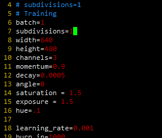
执行测试
回到yolov3的编译目录，即有darknet可执行文件的目录
本例为
/home/dl/yolo/yolo-v3/darknet
相机实时测试执行1
2cd /home/dl/yolo/yolo-v3/darknet
./darknet detector demo test/test_voc.data test/test_test.cfg test/out/test_10000.weights
参数解释:
- .data 文件为前面自己配置好的test_voc.data 可以决定路径或者相对路径输入，上面使用相对路径输入
- cfg也为前面修改好的cfg文件 可以决定路径或者相对路径输入，上面使用相对路径输入
test/out/test_10000.weights 为训练后生成权重文件，具体目录在data文件中指定的路径下面。可以决定路径或者相对路径输入，上面使用相对路径输入
图片执行
1
./darknet detector test test/test_voc.data test/test_test.cfg test/out/test_10000.weights data/test.jpg
参数解释:
.data 文件为前面自己配置好的test_voc.data 可以决定路径或者相对路径输入，上面使用相对路径输入
- cfg也为前面修改好的cfg文件 可以决定路径或者相对路径输入，上面使用相对路径输入
- test/out/test_10000.weights 为训练后生成权重文件，具体目录在data文件中指定的路径下面。的可以决定路径或者相对路径输入，上面使用相对路径输入
- data/test.jpg 为需要测试的图片。可以决定路径或者相对路径输入，上面使用相对路径输入